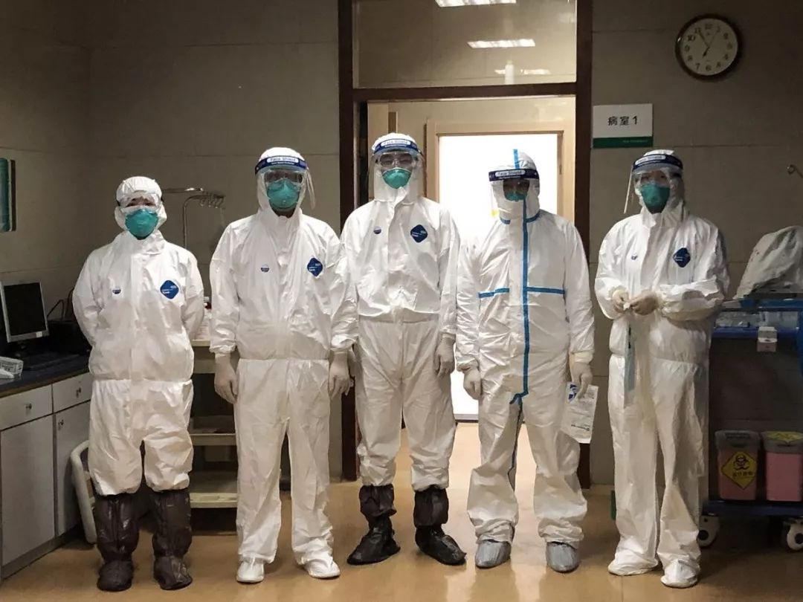
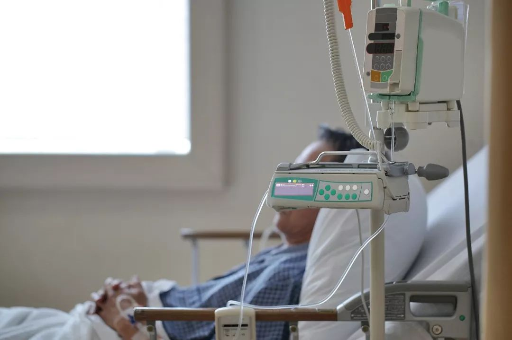
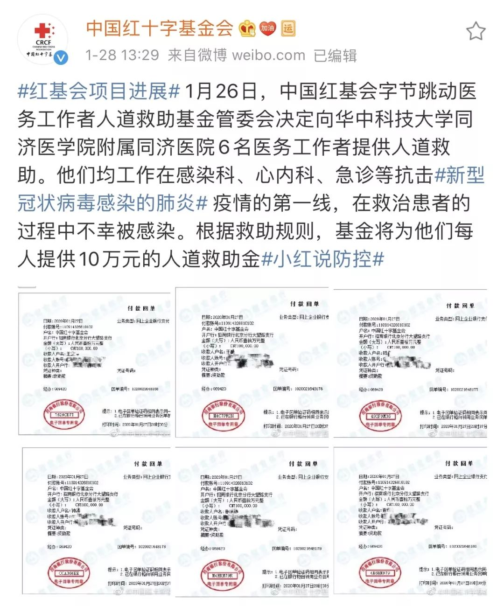

不缺顶尖医院、有SARS前车之鉴，为何武汉仍然每一步都走晚了？
原文链接 备份链接 武汉各大医院发热门诊的紧张态势已有一周，七家定点医院启动才两天已被压到极限。 武汉不缺顶级医院，不缺顶级专家，不缺顶级医疗能力，缺的是公共卫生防控能力、行政效率和疫情处理流程。 在患者和大医疗机构之间，未见到基层 …
从医17年，
作为武汉三甲医院急救中心医生的李春觉得自己“从来没有这么无助过”。

图 | 视觉中国
他在临床接触过各种各样高传染性的疾病，从没怕过。但当他得知自己被确诊为新型冠状病毒感染的肺炎，并随后传染给妻子、两个女儿、岳父母时，他开始害怕了，也第一次怀疑自己，“作为医生，连家里人都保护不了，你还相信你能保护谁？”
特殊时期，武汉所有医院的床位资源都很紧张，为了不占用其他病人床位，李春决定举家隔离治疗。好消息是，他已经进入康复期，家人目前也都症状轻微。
居家隔离这段时间，李春坚持为发热病人网上问诊。前来咨询的患者数量上限一天天在刷新。他知道，如果真是新冠肺炎，这种问诊不太可能给患者带来什么实际的帮助，但能给那些“惶恐且无助的病人”哪怕一点点希望，也是好的。
李春和我们分享了他人生中最惶恐的这段日子。以下是他的自述：
1
2020年1月8日，我所在医院的急救中心被抽用作发热病房，病情严重的发烧病人都要在我们这里观察三天，进行核酸检测确认是否感染新型冠状病毒。
我们急救中心一共15张病床，最开始每天还能勉强维持发热门诊需要住院的病人的收治。但随着疫情的发展，到了1月10日，每天需要住院的急重症病人就有30-50人，而我们常规满床最多只能收治22人。
也是从那个时候开始，我和同事们开始了连轴转的工作。80多位医护人员，绝大多数再没回过家。春节也是在医院过的。防护服穿脱不方便，为了减少去洗手间，我们不敢多喝水，饿了吃医院的工作餐，困了就在医院的休息区对付一下。

1月18日，我开始发热、咳嗽，不过CT还是正常的。我觉得我顶多也就是个上呼吸道感染，就是感冒呗，休息休息就好了。但两三天后，通过核酸检测和影像学诊断，我被确诊了。
现在回想起来，可能是因为1月5日到8日那段无保护暴露史。1月5日那天，我们接诊了一个从地县级医院转诊过来的61岁重症肺炎患者。根据当时的诊断标准，患者必须有华南海鲜市场的接触史，才会考虑新冠肺炎。但这位患者没有。我们只是把他安排在隔离区域，以重症肺炎收治观察。
没想到，后来我和同组的3位护士全部中标。
由于疫情发展较快，我们医院的床位非常紧张，一些病人需要等几天才能入院，为了不占用医院的床位资源，我决定回家自我隔离治疗。
2
我自己诊断开药，发热就吃一些退烧药，加强营养，摄入高蛋白、高能量的食物，熬过了最难受的几天，烧退了。但另一个坏消息来了。因为我1月17日晚上回过一趟家，我的爱人、两个女儿、岳父母，开始陆续出现发热、咳嗽和乏力的症状。
他们被我感染了。
做了快20年医生，我从来不会因为什么事情紧张。什么病我没见过？禽流感、艾滋病，还有很多高传染性的病，我都见过，也没怕过。但这一次，我怕了。
那种感觉，就是一种病毒超越了你的专业、你的掌控能力的无力感。平时我们ICU就是给所有病人保底的，各个科室搞不定的，我们都能搞定。但现在，我们给别人保不了底了。我们自己都中标了。就好像，最后一道防线，没了。
我从来没有这么无助过。我不害怕病毒，就怕自己家人受伤。尽管他们现在还是轻症，在我的治疗下也在逐渐恢复，但我总担心，家里老人、爱人十几天之后会不会有反复？他们的肺，以后能恢复成什么样子？会不会有后遗症？没有人能回答，没有人有经验……
而这一切，是我造成的。
作为医生，连自己家里人都保护不了，你还相信你能保护谁？
3
2月3日应该是这段时间以来，我心情最好的一天。因为家里老人的情况稳定了点。前几天他们因为乏力起不来床的时候，我真的非常非常焦虑。
这些天，有空的时候，我也通过我们医院的公众号，为发烧病人在线看病。1月28日晚上8点多第一次上线，一口气就看到了深夜一两点，加上第二天早上，一共看了大概200多人。其实，为了保证看病质量，医院限制我们每天最多看50个人。我一上线就调整到200个——以我看急诊的量，可以处理这么多。但没想到，第一天就超标。第二天，我调整到300个……现在把上限调整成多少，就会有多少患者。打开手机，源源不断的咨询请求，手机的运行速度根本跟不上。

图 | 视觉中国
大部分是发热病人。有的正在居家隔离；有的考虑是新冠肺炎但还没有去看；有的咨询说没有床位，不知道该怎么办；还有一些咨询目前状况下，老人和孕妇该怎么办；还有人介绍自己一段时间的出行痕迹，问我他有没有感染的可能……我能感受到，这些病人是非常恐慌且无助的。每一个人都很无助。
以前病人网上咨询，一般都是上传病例图片、随便打几十个字，简单问一下。现在我看到的咨询都是写大几千字。我甚至能想象，在屏幕对面，那些五六十岁的人，在手机上花好几个小时，敲下了这些字。他们肯定是没有办法了才会这样。他们没有办法，只能通过这种方式，试图寻找一点希望。
说实话，如果真是新冠肺炎，通过网上咨询的方式，也并不能帮他们解决什么实际问题。但是，我的回复如果能给焦急恐慌的人们希望，哪怕只有一点，也是好的。
马上，我要去复查了，如果核酸检测转阴，没有传染性了，我就要回去上班了。我们科里医生已经不够了，我要去补位。同事们，我快回来了！等疫情过去，我想抱一抱我的小孩。
我的大公主和小公主，
我已经很久没有抱过她们了。
（文中医生为「中国红十字基金会字节跳动医务工作者人道救助基金」受助人。应受助人要求，李春为化名。）
中国红十字基金会字节跳动医务工作者人道救助基金
2020年1月25日，今日头条、抖音、西瓜视频母公司字节跳动向中国红十字基金会捐赠2亿元人民币设立“中国红十字基金会字节跳动医务工作者人道救助基金”，为抗击疫情一线医务工作者提供保障。

截至2020年2月3日，该专项基金已经为七批共67名抗击疫情一线医务工作者提供人道救助。其中，为64名因抗击疫情而不幸感染的一线医务人员，每人资助10万元；为3名因抗击疫情而不幸殉职的一线医务人员，每个家庭资助100万元。
文末点击“阅读原文”
申请字节跳动医务救助基金
（部分图片来自字节跳动）
设计排版：宋嘉慧

原文链接 备份链接 武汉各大医院发热门诊的紧张态势已有一周，七家定点医院启动才两天已被压到极限。 武汉不缺顶级医院，不缺顶级专家，不缺顶级医疗能力，缺的是公共卫生防控能力、行政效率和疫情处理流程。 在患者和大医疗机构之间，未见到基层 …
原文链接 备份链接 记者/韩谦 编辑/计巍 宋建华 *正在进行康复训练的被感染医生陆俊* *1月29日，在经过两次核酸检测均为阴性后，陆俊从金银潭医院ICU转回同济医院普通病房治疗。*他目前仍存在呼吸困难的症状，需高流量吸氧治疗。*陆俊表 …
原文链接 备份链接 2月1日，西藏自治区第三人民医院医生土旦朗杰观看病人胸片。目前，西藏唯一一例确诊的新型冠状病毒感染的肺炎患者在此住院治疗。觉果/摄 新华社CNML图片 作者 杨海 编辑 从玉华 李亮是武汉某三甲医院的病房主任，从1月 …
原文链接 备份链接 *************▲************* 1月30日，医护人员在工作间隙为自己鼓劲打气。 （新华社 陈晨/图） 全文共*3942*字，阅读大约需要9分钟。 据我所知，有的社区医院医生已经被打了，这让我 …
原文链接 备份链接 社区是预防和分诊的第一道防线。如今，在前所未有的疫情冲击之下，在巨大的困难面前，社区和社区工作者们被潮水般的求助人群不断冲击，已到了难堪其负的境地。 △ 武汉街头，吴靖摄 1月23日武汉封城后，武汉某社区居委会书记张 …